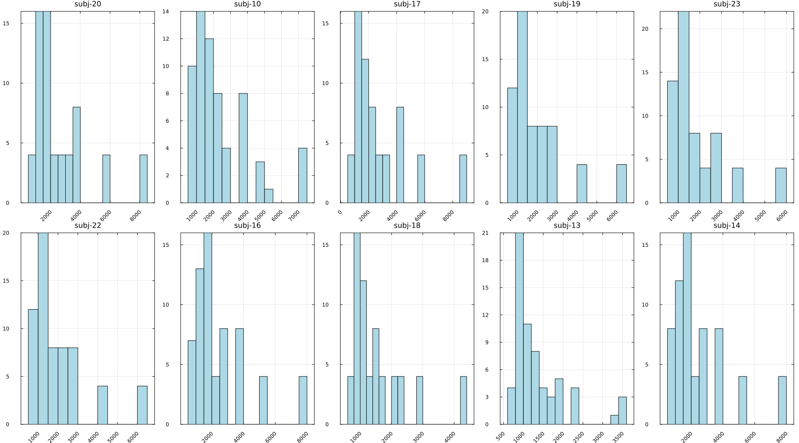

Parameter estimation on empirical data
Previously, we recovered known parameters on simulated data. But often, we do not know these parameters and instead work with empirical data. In this tutorial we will walk through how to organize empirical data to use the toolbox functions.
Load packages
We begin with loading the modules for the tutorial.
julia> using ADDM, CSV, DataFrames, StatsPlots
Read in data
Data in this tutorial are from 10 subjects in Kraijbich et al (2010). We will use the built-in data loading function ADDM.load_data_from_csv that expects a behavioral file with columns parcode, trial, rt, choice, item_left, item_right and fixations file with columns parcode, trial, fix_item, fix_time.
If your data is not organized in this way you could either preprocess it so it does or you can read in the data however you want and reshape it with Julia to ensure it is organized as a dictionary of Trial objects indexed by subject/parcode. A Trial looks like
ADDM.Trial(1, 1474.0, -5, 5, Number[3, 0, 1, 0, 2, 0], Number[270.0, 42.0, 246.0, 62.0, 558.0, 296.0], #undef, #undef, #undef)where the first element is choice (-1 for left, +1 for right), second element is response time in ms, third is value of left option, fourth is value of right option. Fixation data is specified in the fourth and fifth elements as fixation location (1 for left, 2 for right) and fixation duration (in ms) respectively. The remaning elements currently set to #undef can be ignored. These are for debugging/examining the relative decision value when simulating trials.
julia> krajbich_data = ADDM.load_data_from_csv(data_path * "Krajbich2010_behavior.csv", data_path * "Krajbich2010_fixations.csv")Dict{String, Vector{ADDM.Trial}} with 10 entries: "20" => [Trial(-1, 1991, 4, 2, Number[1, 2, 1], Number[339, 679, 680], #undef… "10" => [Trial(-1, 3808, 4, 2, Number[1, 2, 1, 2, 1, 2, 1], Number[98, 426, 3… "17" => [Trial(-1, 1191, 0, 0, Number[1, 2], Number[340, 638], #undef, #undef… "19" => [Trial(1, 1449, 7, 5, Number[1, 2, 1], Number[258, 677, 99], #undef, … "23" => [Trial(-1, 6078, 6, 4, Number[1, 2, 1], Number[2601, 1435, 1675], #un… "22" => [Trial(1, 2882, 6, 2, Number[2, 1, 2, 1, 2], Number[259, 797, 595, 57… "16" => [Trial(1, 1251, 5, 5, Number[1, 2], Number[275, 660], #undef, #undef,… "18" => [Trial(-1, 13456, 2, 0, Number[1, 2, 1, 2, 1, 2, 1], Number[637, 2691… "13" => [Trial(1, 3848, 1, 2, Number[1, 2, 1, 2], Number[1036, 757, 997, 757]… "14" => [Trial(-1, 2234, 2, 0, Number[2, 1], Number[399, 737], #undef, #undef…
Note the organization of data. It is a dictionary where the keys are subject identifiers and values are arrays of ADDM.Trial objects.
Grid search
Now that we have loaded our data, we define the parameter space over which we'll search to determine the best combination for each subject. We'll use a grid of 64 parameter combinations with d in {0.0001, 0.00015, 0.0002, 0.00025}, μ in {80, 100, 120, 140}, θ in {0.3, 0.5, 0.7, 0.9} and σ = d*μ
julia> fn = data_path * "Krajbich_grid.csv";julia> tmp = DataFrame(CSV.File(fn, delim=","));julia> param_grid = NamedTuple.(eachrow(tmp))64-element Vector{NamedTuple{(:d, :sigma, :theta), Tuple{Float64, Float64, Float64}}}: (d = 0.0001, sigma = 0.008, theta = 0.3) (d = 0.00015, sigma = 0.012, theta = 0.3) (d = 0.0002, sigma = 0.016, theta = 0.3) (d = 0.00025, sigma = 0.02, theta = 0.3) (d = 0.0001, sigma = 0.01, theta = 0.3) (d = 0.00015, sigma = 0.015, theta = 0.3) (d = 0.0002, sigma = 0.02, theta = 0.3) (d = 0.00025, sigma = 0.025, theta = 0.3) (d = 0.0001, sigma = 0.012, theta = 0.3) (d = 0.00015, sigma = 0.018, theta = 0.3) ⋮ (d = 0.00025, sigma = 0.025, theta = 0.9) (d = 0.0001, sigma = 0.012, theta = 0.9) (d = 0.00015, sigma = 0.018, theta = 0.9) (d = 0.0002, sigma = 0.024, theta = 0.9) (d = 0.00025, sigma = 0.03, theta = 0.9) (d = 0.0001, sigma = 0.014, theta = 0.9) (d = 0.00015, sigma = 0.021, theta = 0.9) (d = 0.0002, sigma = 0.028, theta = 0.9) (d = 0.00025, sigma = 0.035, theta = 0.9)
Since the dataset contains multiple subjects and we want to compute the best parameters for each subject, we loop through each subject's dataset and collect the estimated parameters in a single data frame for each subject. This is sufficiently fast for this small example but see the parallelization tutorial on how to do this with larger datasets and parameter spaces.
julia> all_nlls = DataFrame();julia> subj_mles = Dict();julia> for k in keys(krajbich_data) cur_subj_data = krajbich_data[k] output = ADDM.grid_search(cur_subj_data, param_grid, ADDM.aDDM_get_trial_likelihood, Dict(:η=>0.0, :barrier=>1, :decay=>0, :nonDecisionTime=>0, :bias=>0.0), return_grid_nlls = true) subj_mles[k] = output[:mle] # Add subject id output[:grid_nlls][!, "parcode"] .= k append!(all_nlls, output[:grid_nlls]) end;
To view best parameter estimates for each subject we can look at the subj_mles data frame, to which the output of ADDM.grid_search was pushed for each subject.
julia> subj_mlesDict{Any, Any} with 10 entries: "20" => Dict{Symbol, Real}(:barrier=>1, :decay=>0, :timeStep=>10.0, :nonDecis… "10" => Dict{Symbol, Real}(:barrier=>1, :decay=>0, :timeStep=>10.0, :nonDecis… "17" => Dict{Symbol, Real}(:barrier=>1, :decay=>0, :timeStep=>10.0, :nonDecis… "19" => Dict{Symbol, Real}(:barrier=>1, :decay=>0, :timeStep=>10.0, :nonDecis… "23" => Dict{Symbol, Real}(:barrier=>1, :decay=>0, :timeStep=>10.0, :nonDecis… "22" => Dict{Symbol, Real}(:barrier=>1, :decay=>0, :timeStep=>10.0, :nonDecis… "16" => Dict{Symbol, Real}(:barrier=>1, :decay=>0, :timeStep=>10.0, :nonDecis… "18" => Dict{Symbol, Real}(:barrier=>1, :decay=>0, :timeStep=>10.0, :nonDecis… "13" => Dict{Symbol, Real}(:barrier=>1, :decay=>0, :timeStep=>10.0, :nonDecis… "14" => Dict{Symbol, Real}(:barrier=>1, :decay=>0, :timeStep=>10.0, :nonDecis…
As an example visualization below we plot variability in the negative log likelihoods for each parameter combination for each subject. This is not a plot that is typically used for any model diagnostics. The intention is only to show that the likelihood function did indeed compute different values for different parameter combinations.
julia> wide_nll_df = unstack(all_nlls, :parcode, :nll);julia> select!(wide_nll_df, Not([:d, :sigma, :theta]));julia> colnames = names(wide_nll_df);julia> colnames = string.("subj-", colnames);julia> N = length(colnames);julia> @df wide_nll_df histogram(cols(1:N); layout=grid(2,5), legend=false, title=permutedims(colnames), frame=:box, titlefontsize=11, c=:blues, bins = 20, size=(1800,1000), xrotation = 45)Plot{Plots.GRBackend() n=10}
